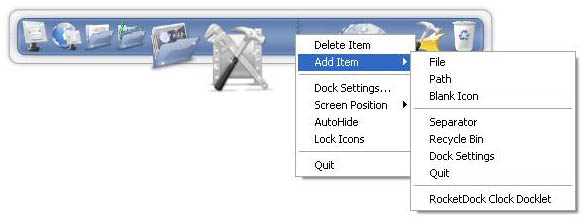
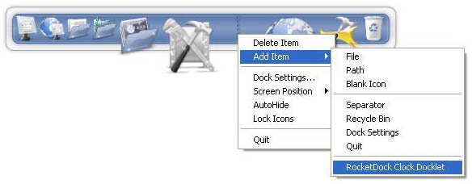
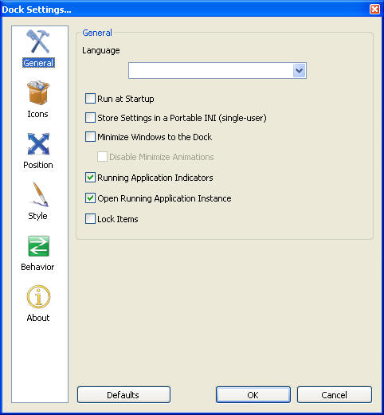
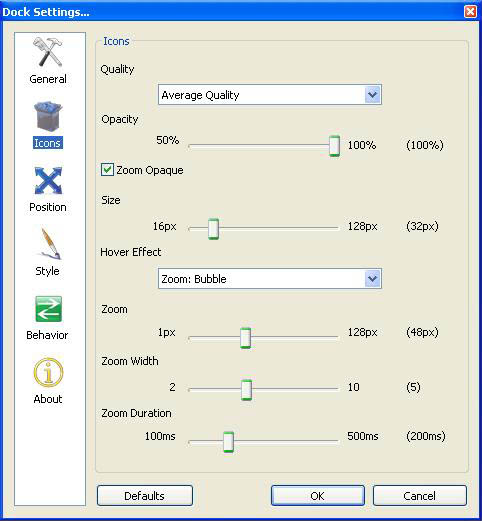
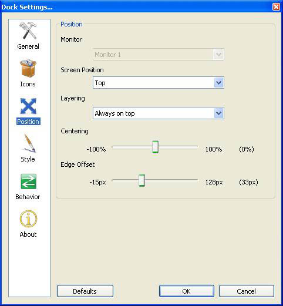
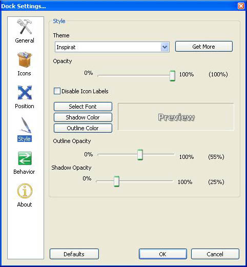
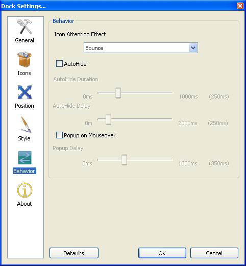
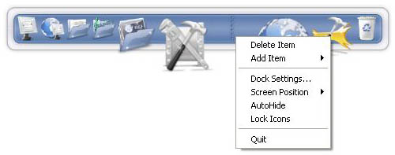

Si vous avez déjà regardé par dessus l'épaule de quelqu'un qui travaille sur un Mac, vous avez dû remarquer cette jolie petite barre d'icônes au bas de l'écran, non ? Cette barre est un 'dock'. Pour ceux qui n'auraient jamais vu cela, disons qu'un dock est une barre qui s'accroche au bord de votre écran, avec une image de fond et tout un rang d'icônes. La fonction d'un dock est de présenter des raccourcis vers vos applications et documents de façon organisée, en limitant l'encombrement de votre bureau.
Réduire les fenêtres vers le dock
Visualisation de miniatures en temps réel sur Windows Vista
Indicateurs d'application en cours d'exécution
Utilisation simple par glisser-déposer
Compatible avec les environnements multi-moniteurs
Peut utiliser les PNG transparents et les ICO
Zoom et transitions douces des icônes
Masquage automatique
Popup au survol de souris
Options de positionnement et d'apparence
Entièrement personnalisable
Compatible avec les docklets pour Objectdock
Compatible avec les skins de MobyDock, ObjectDock, RK Launcher, et Y'z Dock
Marche bien sur les ordinateurs peu puissants
Support d'Unicode
Traduit en nombreuses langues et facilement traduisible
Windows 2000/XP/Vista
Processeur à 500MHz minimum
10Mo de RAM libre
Afrikaans, albanais, arabe, bengali, brésilien, bulgare, catalan, chinois simplifié et traditionnel, croate, tchèque, danois, néerlandais, anglais, finnois, français, galicien, géorgien, allemand, grec, hébreu, hongrois, indonésien, italien, japonais, coréen, norvégien, persan, polonais, portugais, roumain, russe, serbe (cyrillique), serbe (latin), sinhala, slovaque, slovène, espagnol, suédois, thaï, turc, ukrainien
La première chose que la plupart des gens veulent faire après l'installation de RocketDock est d'ajouter de nouveaux raccourcis. Il y a plusieurs façons de faire cela :
Vous pouvez faire simplement glisser un raccourci de n'importe quel endroit ou presque ( votre bureau, une fenêtre de l'explorateur, la barre de lancement rapide, et le menu de démarrage) vers RocketDock
Une autre façon de faire est par le biais du menu « Nouveau Raccourci » accessible par un clic droit sur le dock.

Ce menu vous propose plusieurs options et chacune donne accès à un type d'élément différent. Détaillons les :
Fichier: Vous pouvez ajouter n'importe quel type de fichier à RocketDock. Quand vous cliquerez ce fichier s'ouvrira avec son application associée.
Dossier: Vous pouvez ajouter n'importe quel dossier à RocketDock. Il s'ouvrira dans l'Explorateur Windows.
Icône Vierge: Cette option créé un objet avec aucun réglage d'icône. Quand vous cliquez dessus, la fenêtre "Propriétés" s'ouvrira pour que vous puissiez configurer manuellement ces propriétés. C'est utile quand vous voulez ajouter un objet spécial qui n'est pas un fichier ou un dossier. Par exemple, ça peut être un lien vers une page web.
Séparateur: Ceci ajoute un séparateur entre les icônes ce qui vous aide à les organiser par catégories. Il peut être utilisé comme un repère visuel.
Corbeille: Cela ajoute un raccourci vers la corbeille, qui montre si elle est vide ou pleine.
Raccourci vers "Paramètres": Ceci est un objet particulier. Dans le cas ou vous avez effacé le raccourci vers les Paramètre du Dock sur RocketDock, ceci le remettra à sa place.
Quitter: Crée une icône qui ferme RocketDock quand on clique dessus.
Les docklets sont des sortes de mini applications qui remplissent une fonction et tourne au sein de RocketDock. Il vont du vu-mètre de mémoire vive jusqu'à une corbeille qui montre si elle est vide ou pleine. Vous pouvez en ajouter à RocketDock en les ajoutant au dossier situé à l'emplacement :
C:\Program Files\RocketDock\Docklets (par défaut)
Cliquez ensuite du bouton droit de la souris sur rocket dock et dans le menu d'ajout d'élément, une option supplémentaire apparaîtra pour chacun des docklets que vous avez ajoutés.

Remarquez que RocketDock ne supporte que les docklets d'ObjectDock
Vous pouvez modifier l'apparence de chaque élément de RocketDock. Faites un clic droit sur l'icône et choisissez « propriétés »
Vous verrez apparaître la fenêtres des paramètres d'icônes ou vous pourrez changer ses propriétés.

Ici se trouve une liste des sous-dossiers de votre dossiers d'icônes :
C:\Program Files\RocketDock\Icons (par défaut)
Vous pouvez y ajouter autant d'icônes que vous voulez et elles seront disponibles. Les boutons + & - permettent d'ajouter et supprimer des répertoires qui ne sont pas des sous-dossiers du dossier d'icônes de RocketDock.
Ici apparaissent les icônes contenues dans le dossier sélectionné dans le panneau « Dossiers »
Ici est représentée l'icône que vous avez choisie pour cet élément. Le menu déroulant sous l'aperçu (généralement grisé) sert pour les icônes avec différents états, comme la corbeille vide ou pleine ou les icônes vides.
C'est là que vous changerez la façon dont le titre de votre icône s'affichera, à quoi il est lié, et d'autres action spéciales proposées.
Nom: Mettez le label qui apparaîtra quand vous survolerez l'item dans RocketDock avec votre souris.
Cible: C'est l'adresse de votre item sur l'ordinateur.
Emplacement: Ceci définit l'adresse de l'application qui sera sollicité par l'item.
Arguments: Ceci met des paramètres optionnels pour l'application ciblée.
Exécuter: Ceci met l'état réduit de la fenêtre quand l'item les lancé depuis RocketDock.
Rechercher la cible: Ceci vous permet de changer la cible en sélectionnant le fichier ou le dossier de votre choix.
Menu contextuel en cascade: Ceci choisira les options d'affichage spéciales dans le menu contextuel d'un item de RocketDock. Par exemple quand vous avez un raccourci vers la Corbeille dans RocketDock et l'option Menu contextuel en cascade activé, vous obtenez ça :

Vous pouvez retirer les items de RocketDock très simplement et ce de deux façons. La première consiste à faire glisser l'item hors de RocketDock et de le mettre sur le bureau. Il disparaîtra simplement. La seconde est de faire un clic droit sur l'item et de sélectionner l'option "Effacer".

Vous pouvez enlever les séparateur de la même façon. Les docklets eux peuvent seulement être enlevé avec la première méthode.
Vous pouvez glisser des fichiers et des dossiers dans votre un item de votre dock.
Si vous glissez un fichier/dossier dans l'item d'une application, si l'application le peut elle ouvrira le fichier déposé. Par exemple si vous déposez un PNG sur un raccourci vers Photoshop, Photoshop se lancera et ouvrira l'image.
Si vous glissez un fichier ou un dossier dans un item qui est lié à un dossier, alors le fichier déposé sera copié dans le dossier lié à l'item. Chaque item réagira de la même façon qu'un item sur votre bureau.
Si vous glissez un fichier ou un dossier vers un item qui pointe vers la corbeille, il sera effacé.
Si vous avez choisi l'option « réduire les fenêtres vers le dock » dans les réglages, les fenêtres que vous réduirez apparaîtront en tant que miniatures dans le dock. Elles peuvent être réorganisées comme on peut s'y attendre, mais on ne peut pas les effacer en les glissant hors du dock. Sous Windows Vista vous bénéficierez d'un aperçu en temps réel à condition que la 'Composition du Bureau' soit activée dans les réglages de performance de Windows. [N.D.T. : Traduction de 'Composition du bureau' incertaine]
Vous pouvez restaurer ou fermer une fenêtre en faisant un clic droit sur son icône et en sélectionnant les options. Par défaut, la fenêtre s'ouvrira sur un clic gauche.

Pour éviter la minimisation vers le dock au cas par cas, il suffit de maintenir CTRL en minimisant. Ainsi votre lecteur ou programme ira se loger dans la barre des tâches comme d'habitude.

Langue: Choisissez la langues que vous voulez pour utiliser RocketDock. Par défaut la langue devrait être la langue par défaut de votre système.
lancer RocketDock au démarrage: Cochez cette option si vous voulez que RocketDock se lance au démarrage de Windows.
Verrouiller les icônes: Cette option fera en sorte qu'aucun des items sur RocketDock ne puisse être enlevé ou effacé. Pour un accès rapide vous pouvez appuyer sur le bouton "Control" de votre clavier pendant que vous glissez un item pour le déplacer ou l'effacer.
Indicateurs d'applications ouvertes: affiche un petit marqueur si l'application est déjà lancée.
Ouvrir les fenêtres déjà ouvertes: pour rappeler une fenêtre de l'application au lieu d'en ouvrir une nouvelle.

Qualité: Ceci fixe le rendu des icônes pendant le grossissement.
Taille: Ceci fixe la taille initiale des items sur RocketDock.
Étirement: Ceci fixe la taille maximum jusqu'à laquelle vos items grossiront pendant le survol avec la souris.
Nombre d'icônes animées: le nombre d'icônes s'animeront pendant l'étirement.
Durée de l'animation: La vitesse (en millisecondes) avec laquelle les items iront jusqu'à leur taille maximale.
Étirement continu: Une sorte spéciale d'étirement ou tous vos items changent de taille en même temps, créant une apparence de rail.
Opacité: la transparence des icônes.

Moniteur: Si vous avez plus d'un écran, vous pourrez choisir sur lequel RocketDock apparaîtra. Le réglage "Moniteur *" traitera tous vos moniteurs comme un ensemble.
Position: Choisissez sur quel côté de votre écran RocketDock se placera.
Niveau: Choisissez comment RocketDock apparaîtra avec les fenêtres. "Au premier plan" signifie que RocketDock apparaîtra au dessus des fenêtres. "Normal" autorise les nouvelle fenêtres ou les fenêtre agrandies à couvrir RocketDock. "A l'arrière plan" fait en sorte que RocketDock reste toujours sous les fenêtres.
Déplacement: Ceci vous permet de régler l'emplacement de RocketDock sur le bord que vous avez choisi. C'est le réglage horizontal.
Ajustement vertical: Vous pouvez décider de décoller RocketDock du bord de l'écran avec ce réglage.

Thème: Choisissez le thème que vous voudriez utiliser sur RocketDock. Vous pouvez ajouter plus de thèmes en les copiant dans le dossier des Skins de RocketDock qui se situe là: C:\Program Files\RocketDock\Skins (adresse par défaut)
Transparence: Règle la transparence du fond de RocketDock.
Masquer le texte des icônes: enlève le texte d'une icônes quand on la survole à la souris.
Police: Sélectionnez la police, sa couleur, sa taille et son style.
Contour: Vous pouvez choisir la couleur du contour de la police.
Ombre: Vous pouvez choisir la couleur de l'ombre qui sera appliquée au texte.
Opacité du contour: Choisissez la transparence du contour du texte.
opacité de l'ombre: Choisissez la transparence de l'ombre.

Effet d'activation: Un effet quand vous cliquez sur une icône. C'est aussi celui qui sera utilisé pour attirer votre attention, comme quand une fenêtre « flashe » dans beaucoup de messageries instantanées quand vous recevez un message.
Masquer automatiquement: RocketDock se camouflera au bord de votre écran et réapparaîtra quand vous passerez la souris au bord de l'écran où il se trouve.
Délai pour masquer la barre: C'est le temps pour RocketDock d'apparaître depuis le bord de l'écran.
Durée du masquage: c'est la durée de l'animation de masquage elle-même.
Activation à la souris: Ceci autorise RocketDock à surgir au dessus de n'importe quelle fenêtre quand il est couvert et à se cacher à nouveau quand vous avez fini.
Délai d'activation: c'est la durée en ms que RocketDock attendra avant de surgir (popup) quand sa zone sera survolée à la souris.
Vous pouvez accéder aux différentes options via un clic droit sur RocketDock.

Vous pouvez choisir la position sur l'écran, le verrouillage des icônes, le réglage des moniteurs et le masquage automatique de RocketDock. Vous pouvez aussi voir un raccourci vers les Paramètres du Dock, donc ajouter un item vers ceci dans RocketDock n'est pas nécessaire.
Dans la fenêtre des réglages du Dock, vous trouverez un bouton "Par défaut", ce dernier réinitialisera tous les réglages de RocketDock et remettra ceux que vous aviez à la première installation de RocketDock.
Note: Ceci n'affectera pas vos items.
Vous pouvez cacher et faire réapparaître le dock en tapant ctrl+alt+R.
Si vous avez des questions supplémentaires sur RocketDock vous pouvez simplement visiter notre forum. Vous pouvez aussi trouver des tutoriaux qui vous montre les différentes façons de customiser RocketDock.
Si votre langue n'est pas supportée et que vous voudriez aider à traduire, ou mettre à jour un fichier de langue vous trouverez les instructions ici. Si vous voulez aider à traduire cette documentation, merci de nous contacter sur le forum.
Parler à votre entourage de notre logiciel est une très bonne façon de nous aider. Poster les liens sur votre site web est la meilleur façon de commencer. Vous pouvez trouver des bannières ou soumettre les votre sur le forum.
Nous avons une boutique en ligne nommé le Punk Software Swag Shack. Vous pouvez y acheter des objets comme des t-shirts, des tapis de souris, ou des casquettes que vous ne pouvez qu'aimer. Une partie des bénéfices servira à nourrir les programmeurs affamé de Punk Software.